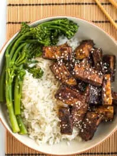

Sticky Teriyaki Tofu

Description
This sticky teriyaki tofu is my favourite tofu recipe ever – so easy to make, but such an incredible flavour! This dish will convert any tofu hater.
Ingredients
- 1 tbsp oil
- 400 g (~ 14 oz) extra firm tofu, pressed and cut into bitesize pieces
- 1 tsp minced garlic (I used garlic paste)
- 1/2 tsp minced ginger (I used ginger paste)
- 4 tbsp soy sauce
- 1 tbsp brown sugar
- 3 tbsp water
- 1 tbsp mirin or white wine vinegar
- 1/4 tsp Chinese five spice
Steps
- Heat a dash of oil in a large frying pan, and add the pieces of tofu. Cook over a medium heat for around 10 minutes, turning the tofu over ever few minutes, until it’s crispy all over. You actually want to cook it until it’s a bit too dry, as it will rehydrate once the sauce is added.
- When the tofu is very dry and crispy, add the minced garlic and ginger. Cook for 1 more minute, then add the remaining ingredients. Bring to a simmer, and cook for a few more minutes until the sauce has become thick and sticky. If you want a slightly saucier dish, you can add a dash more water (or a little more of any of the sauce ingredients).
- Best served straight away.